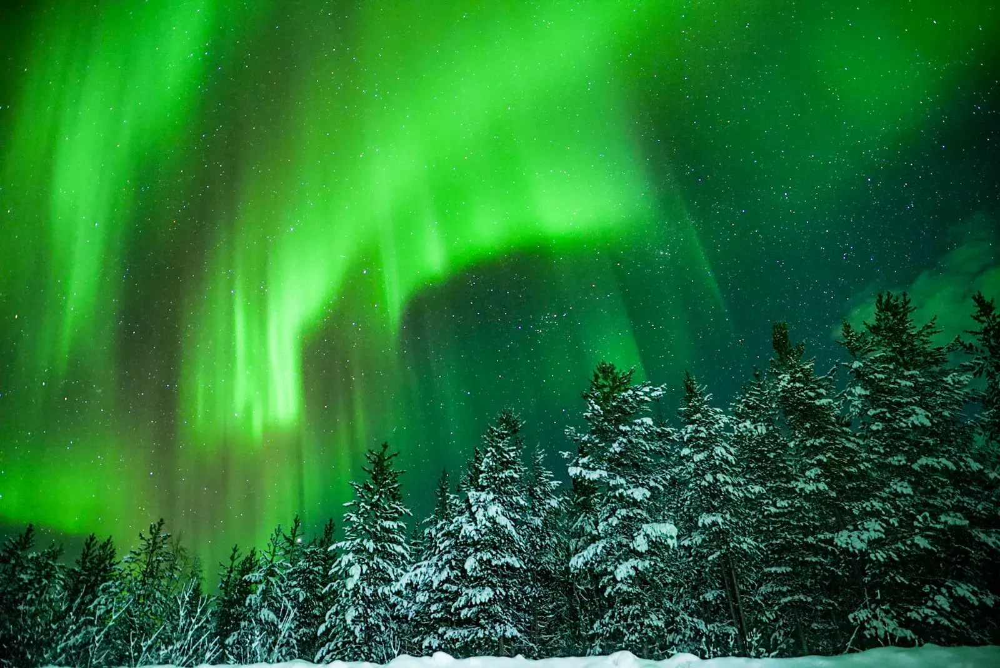

नमस्ते, मैं साशा हूँ। मैं मॉस्को में ROTW के ऑफ़िस में काम करता हूँ और मैं आपका गाइड रहूँगा।
बताइए आप क्या देखना चाहते हैं, और बात करते-करते मैं आपके लिए ट्रिप तैयार कर दूँगा।
— साशा
रूस में कहाँ जाना चाहेंगे?
अपने गाइड से बात करें, और बात करते-करते आपकी ट्रिप तैयार होती जाएगी।
-
1

-
2

-
3

-
4

-
5

-
6

-
7

-
8

-
9

-
10

यह नोटबुक कैसे काम करती है
- 1
किसी जगह के बारे में मेरे नोट्स पढ़ें।
- 2
जो पसंद आए उसे पिन करें। वे आपकी ट्रिप के लिफ़ाफ़े में जुड़ जाएँगे।
- 3
अपनी ट्रिप मुझे भेजें। मैं ईमेल पर प्लान और सही कीमत के साथ जवाब दूँगा।
ROTW हर ट्रिप की कीमत आपकी तारीखों, होटल की श्रेणी और लोगों की संख्या के आधार पर तय करता है। जो पसंद आए उसे पिन करें, मुझे भेजें, और मैं आपके लिए सही कीमत बताऊँगा।
— साशा